プロジェクト工程表（ガントチャート）の作成・更新手順
本ツールは、エクセル版「工程マイルストーン」の置き換えを目的とした Web 工程表です。
ブラウザから社内サーバへアクセスして使用します。
| 項目 | 内容 |
|---|---|
| URL | サーバ管理者から配布された URL（例: http://<サーバ名>:5000/） |
| 推奨ブラウザ | Chrome / Edge の最新版 |
| 同時編集 | 本バージョンでは想定していません。複数人で同時に同じプロジェクトを更新しないでください。 |
画面上部に共通ナビゲーションがあります。
| メニュー | 役割 |
|---|---|
| プロジェクト | プロジェクトの一覧・作成・各プロジェクトのガントへの入口。 |
| 社員マスタ | 担当者として登録できる社員の一覧・追加・編集。 |
| 休日設定 | 土日以外の休日（祝日・特別休暇など）の登録。 |
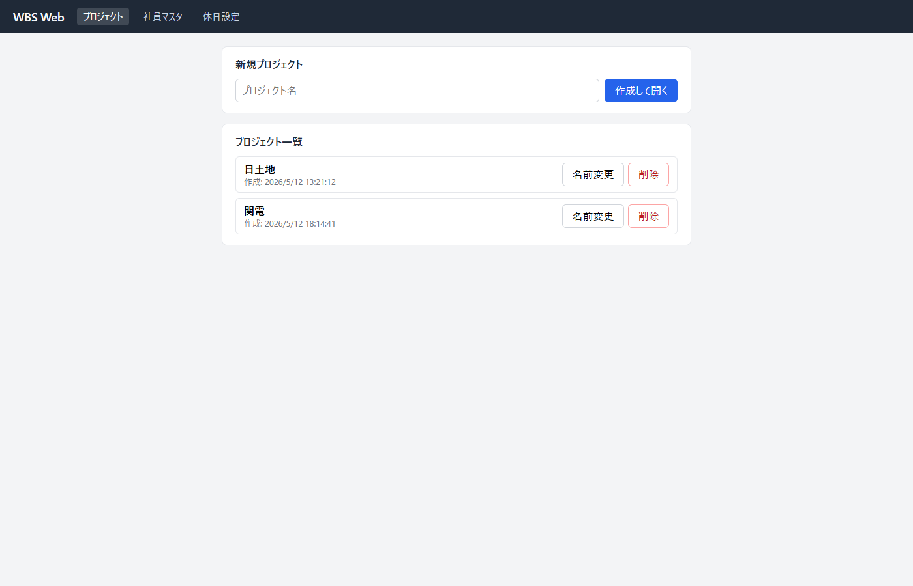
タスクの担当者として割り当てる社員を、まず社員マスタに登録します。
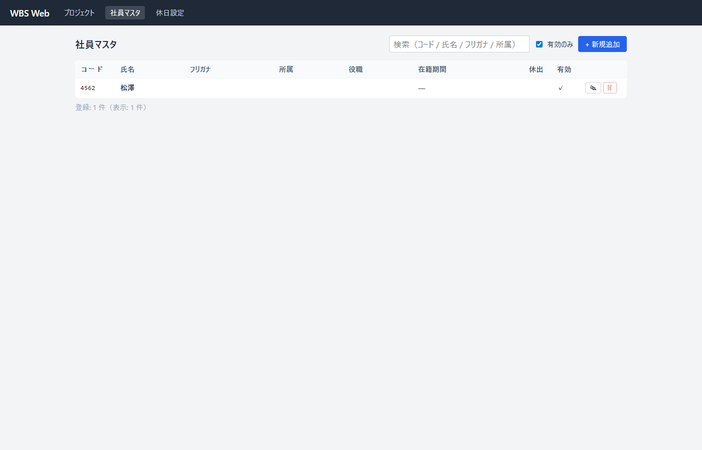
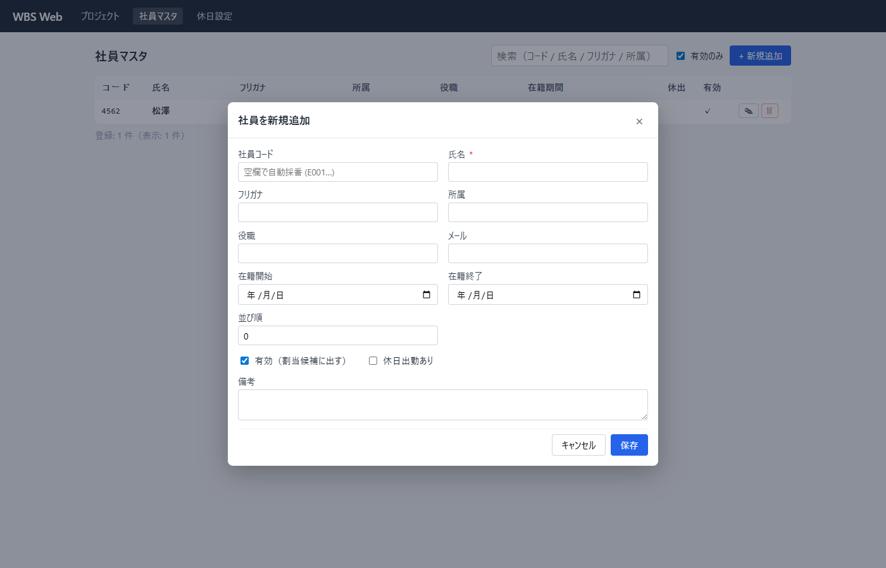
| 項目 | 説明 | 必須 |
|---|---|---|
| 社員コード | 未入力で E001 から自動採番されます。既存の番号体系がある場合は任意のコードを入れられます。 | — |
| 氏名 | 表示用の氏名。 | ○ |
| フリガナ | 検索のヒット率が上がります。 | — |
| 所属 / 役職 | 表示・検索用。 | — |
| メール | 将来の通知連携用（現状は表示のみ）。 | — |
| 在籍開始 / 在籍終了 | 退職した方は「在籍終了」を入力するか、有効チェックを外すと、新規割当の候補から外れます（既に割当中のタスクには引き続き名前が残ります）。 | — |
| 休日出勤 | 休日も作業対象に含めて稼働するメンバーにチェック（将来の計算で参照）。 | — |
| 有効 | 外すと「無効社員」として一覧表示時はグレー表示、新規割当候補から除外されます。 | — |
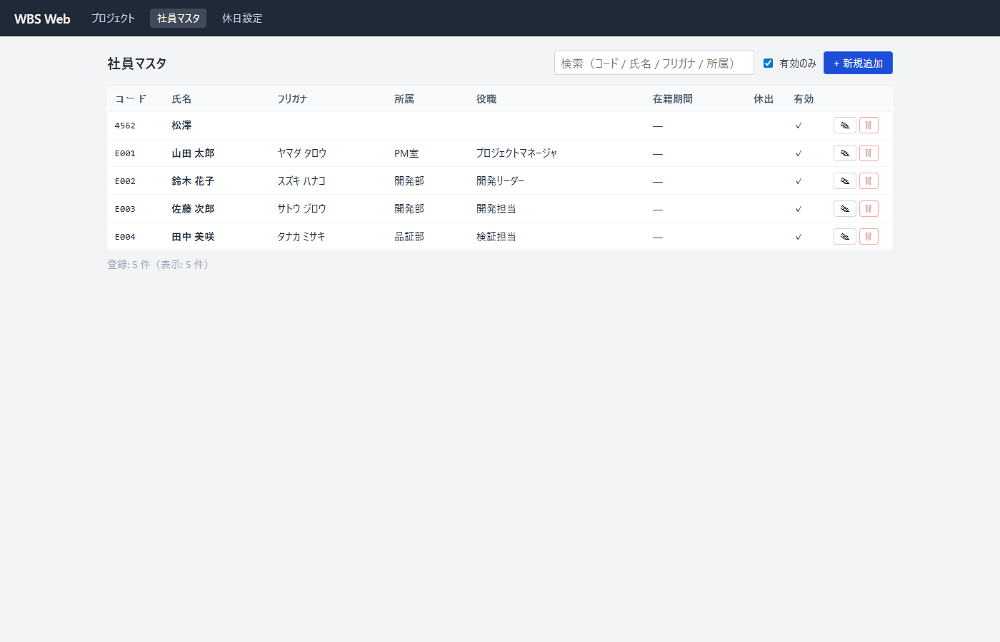
土日に加えて休業日として扱いたい日付（祝日・年末年始など）を登録すると、 ガント上の表示と、後述の日数計算（平日カウント）に反映されます。
YYYY-MM-DD,名称 形式の複数行を一気に登録。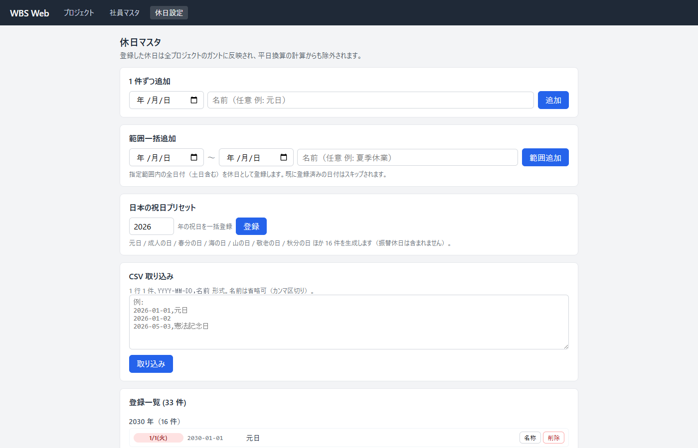
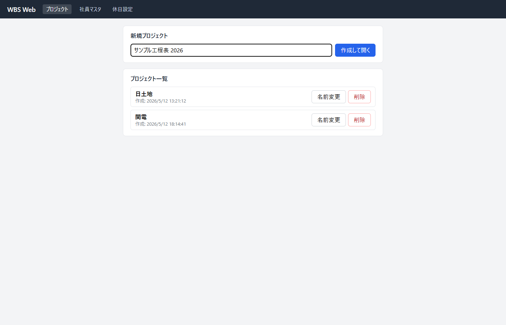
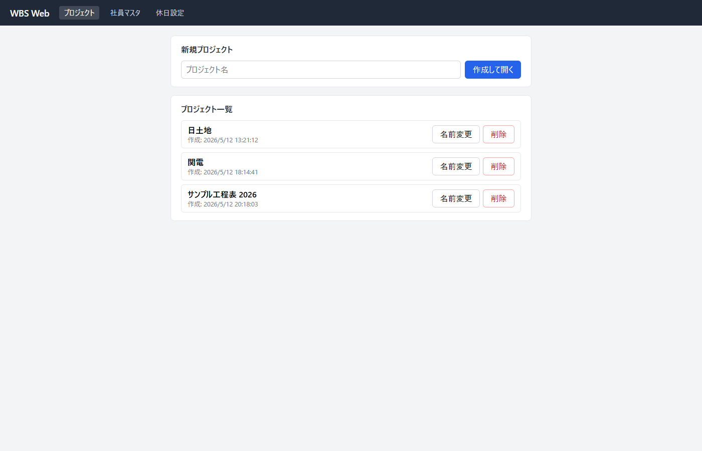
社員マスタには全社員が登録されますが、各プロジェクトで 担当ドロップダウンに出す社員はプロジェクトごとに選択します。
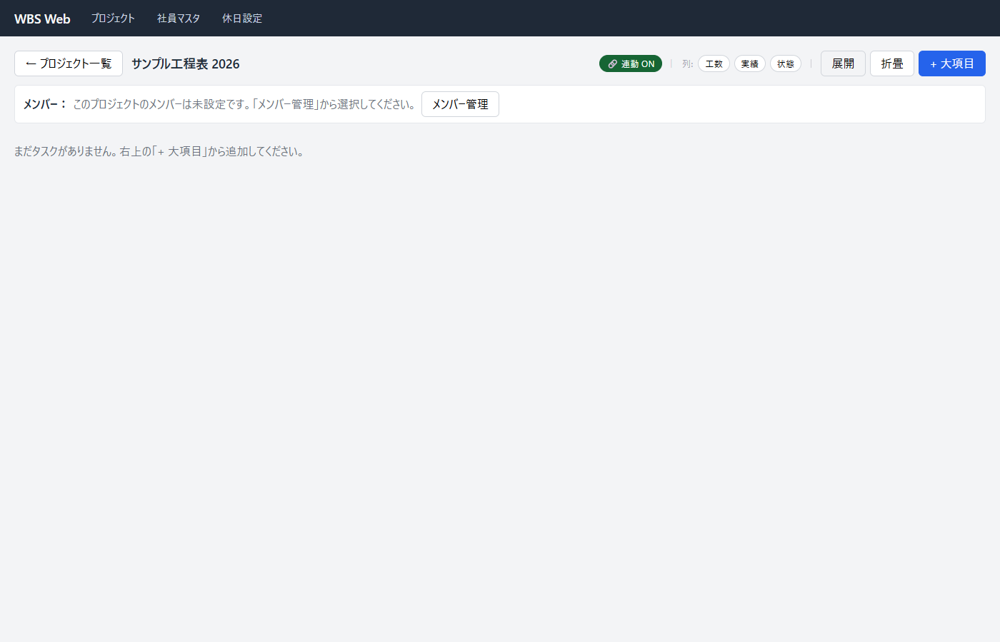
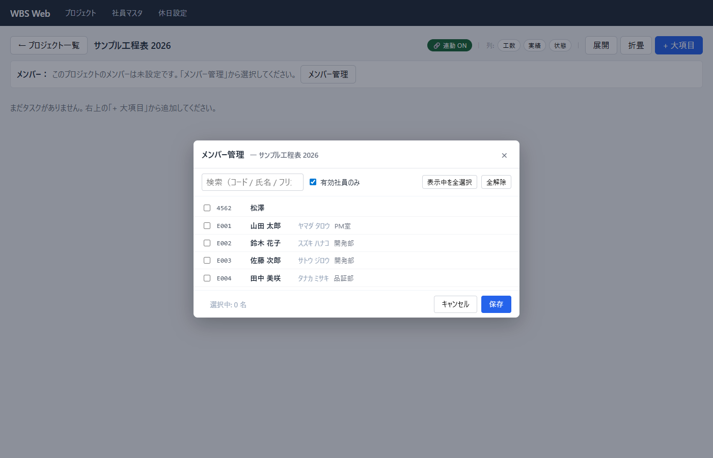
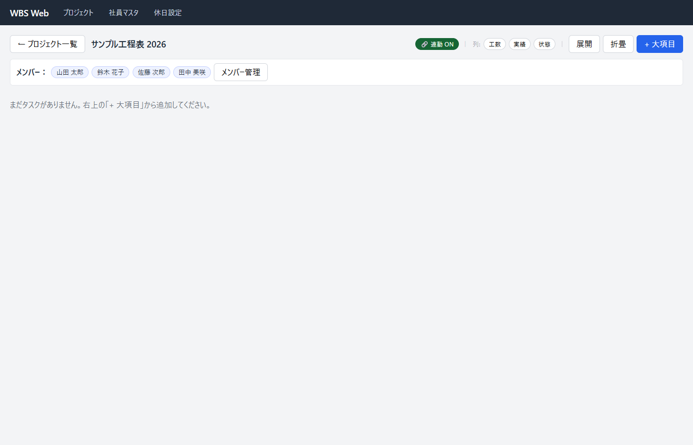
タスクは 大項目 → 中項目 → 項目 の 3 階層で登録します。
日付・日数・担当を入力できるのは一番下の「項目」だけで、大項目・中項目は配下の集計（開始＝最小、終了＝最大、工数＝合計など）が自動で表示されます。
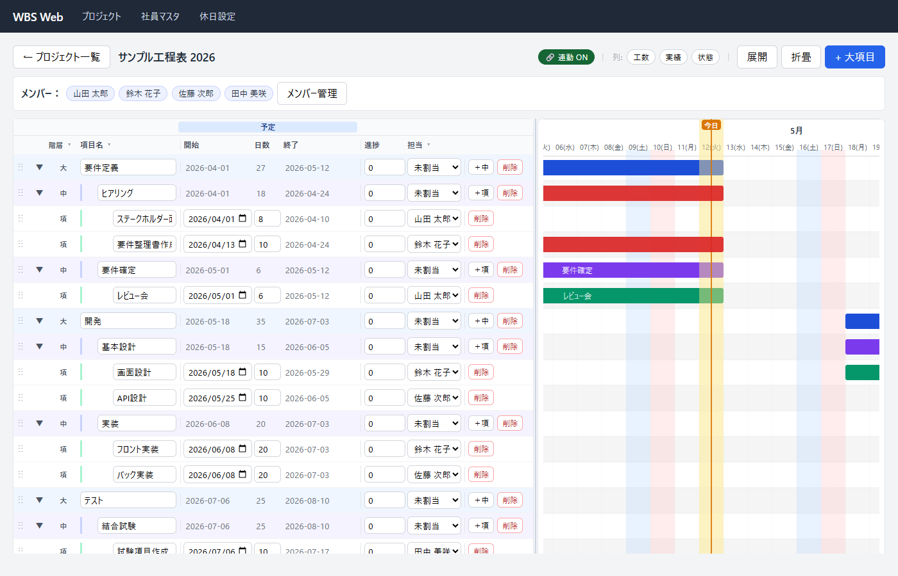
変更方法は 2 通りあります。
| 方法 | 操作 |
|---|---|
| ① 直接入力 | 一覧の「開始日」「日数」セルに数値を直接入力する。 |
| ② バーをドラッグ | ガント右側のバーを、左右にドラッグして開始日や期間を変更する。バーの右端をつかむと長さだけ変更できる。 |
一覧側の行先頭のグリップ（⋮⋮ アイコン）を掴んで、ドラッグ＆ドロップで順番を入れ替えられます。
同じ親（大項目→中項目、または中項目→項目）の中での並べ替えが基本です。
あるタスクの開始・期間を後ろにずらすと、同じ中項目内で、すぐ後ろにくっついている後続タスクが自動で同じ日数だけ後ろにずれます（カスケード）。
| 動く条件 | 動かない条件 |
|---|---|
| 同じ中項目で、変更前のタスクと 重なる もしくは 連日（土日休日を挟む隣接含む）の後続タスク | すでに間が空いている後続タスク、別の中項目のタスク |
「実績」列を表示にすると、項目に実績開始日・実績終了日を入力できます。 進捗 % は一覧上の進捗セルにも、ガントバーをドラッグでも変更できます。
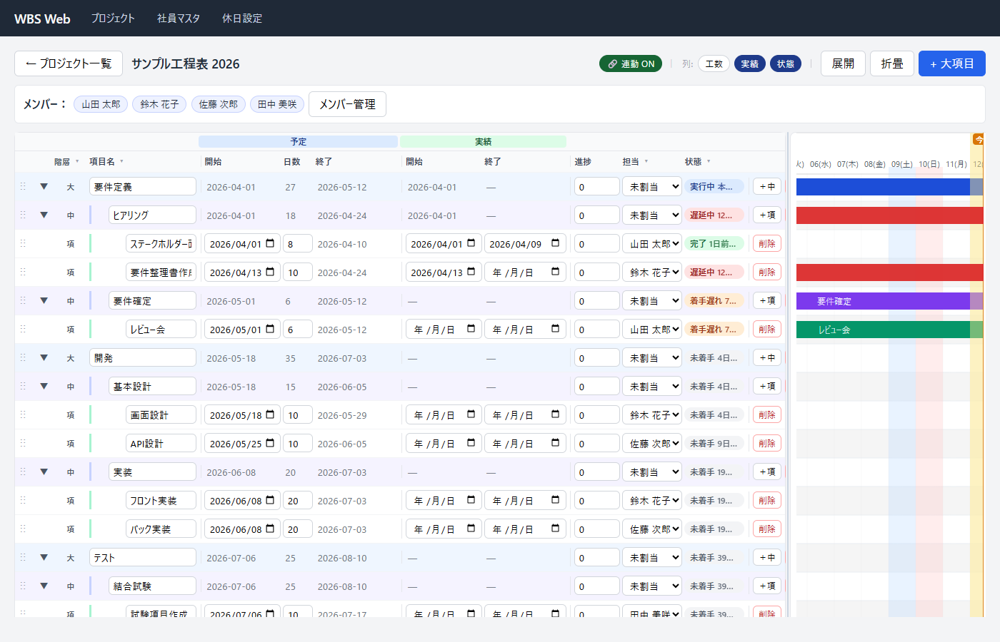
「状態」列は実績日と予定日から自動で 5 段階のいずれかに分類されます。
| 状態 | 条件 | 補足表示 |
|---|---|---|
| 完了 | 実績終了日が入力済み | 予定終了との差（◯日前倒し / ◯日遅れ） |
| 実行中 | 実績開始日のみ入力、予定終了日が今日以降 | あと◯日 / 本日終了予定 |
| 遅延中 | 実績開始日のみ入力、予定終了日を過ぎている | ◯日経過 |
| 着手遅れ | 実績開始日が未入力で、予定開始日が今日以前 | ◯日経過 |
| 未着手 | 実績開始日が未入力で、予定開始日が未来 | あと◯日で開始 |
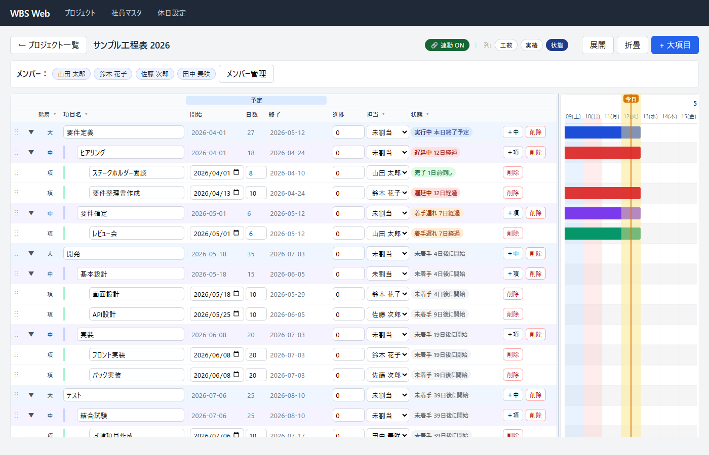
画面右上のピル型ボタンで列の表示・非表示を切り替えできます。チームの好みや画面サイズに合わせて使い分けてください。
| ボタン | 表示される列 |
|---|---|
| 工数 | 予定工数・実績工数 |
| 実績 | 実績開始日・実績終了日 |
| 状態 | 状態バッジ列 |
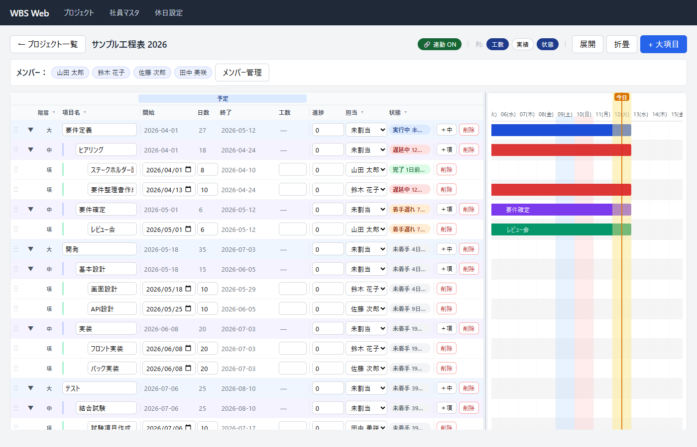
列ヘッダの ▾ ボタンを押すと、Excel のオートフィルタのようなポップオーバーが開きます。
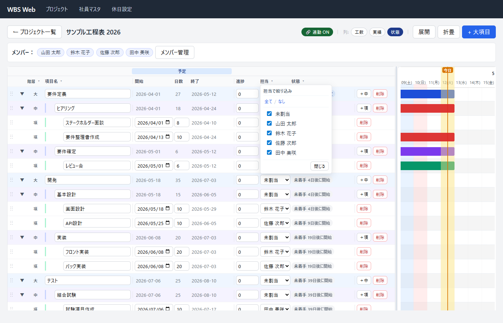
| 操作 | 結果 |
|---|---|
| 大項目・中項目の行頭 ▾ をクリック | その配下を折りたたみ / 展開 |
| ヘッダ右上の「展開」 / 「折畳」 | 全項目を一括展開 / 折りたたみ |
| ページを開いた直後 | ガントは 今日の日付が中央に来るよう自動スクロール。今日の列には縦の琥珀色マーカーと「今日」バッジが表示されます。 |
本ツールにはアンドゥ機能はありません。誤って削除した場合は再入力をお願いします。
重要なプロジェクトは、サーバ管理者がバックアップを取っているか確認しておくと安心です。
できます。プロジェクトごとにメンバー設定で参加させてください。社員マスタには 1 件登録するだけで OK です。
履歴のため 削除はせず、社員マスタ編集で「有効」のチェックを外す（または在籍終了日を入力する）方法を推奨します。
過去のタスクには引き続き名前が残り、新規割当の候補からは除外されます。
終了日は仕様上、開始日と日数から自動計算しています。
特定の日付で終わらせたい場合は、開始日と日数（営業日数）を調整して合わせてください。
これは「連動」機能による意図的な動作です。動かしたくない場合は、ヘッダ右上の「連動」トグルを OFF にしてからドラッグしてください（その操作だけ連動しません）。
一覧とガントは 同じスクロールバーで同期しています。ずれがある場合は、ブラウザの拡大率（Ctrl + 0 でリセット）か、ウィンドウ幅を変えてみてください。